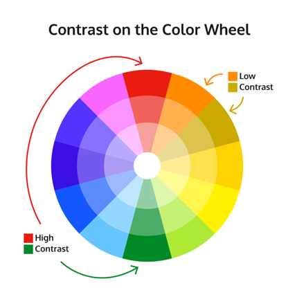

Web Accessibility
Accessibility Tips
Visual Readability- Scale [1]
- You typically want the font-size to be around 18 to 20 px for smaller screens.
- Line-height is by default 1.2. Web Content Accessibility Standards recommend a line height of at least 1.5.
- Letter-spacing is another property that expands the space between letters, with the typical spacing being about 0.05em.
Visual Readability- Color [1]
The color wheel, showing high contrast and low contrast colors [2].
Make sure that colors contrast with each other so that way the text stands out from the background. This is especially important for people with vision impairments. Colors contrast from each other on the color wheel. They need to contrast by the correct amount.
The WCAG ratios for AA are as follows.
- Font less than 24 px and not bold- 4.5:1
- Font less than 19 px and bold- 4.5:1
- Font larger than 24 px and not bold- 3:1
- Font larger than 19 px and bold- 3:1
Visual Readability Structure [1]
- Text-align should be left, right or center since justify is harder to read
- Rather than setting width to be px, you should set it to be ch. The total number of ch should be between 45 to 85, with 65 as the ideal.
Contextual Readability: Interactivity [1]
- In order to show people that elements can be clicked on, you should use the cursor property to display an element can be clicked on.
- input:focus can be used to show users what element they are focused on. CSS colors can also be used to display the status of elements, such as by using border-color.
- Img elements have an alt attribute that is used when an image cannot be displayed. This attribute is used by screen readers or if the image cannot be displayed.
- Labels are used to connect text to inputs. Screen readers read a label out loud when a user is focused on an element. Users can also click on the text in a label element in order to toggle inputs such as radio buttons and checkboxes that may be hard to click.
Works Cited
{kind=link}